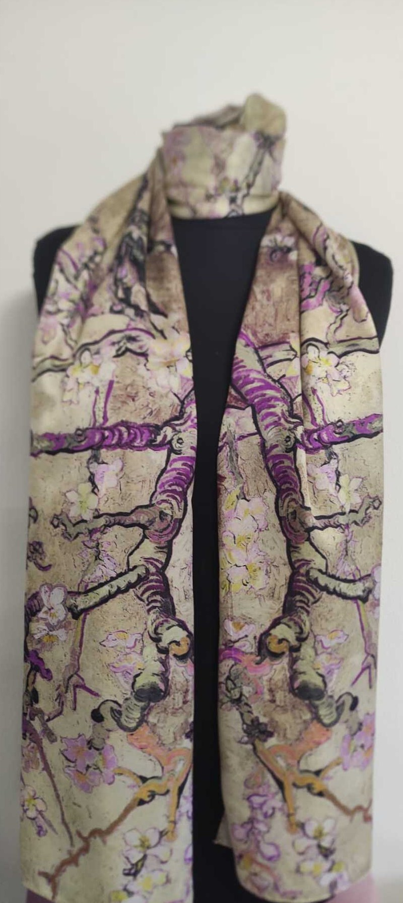
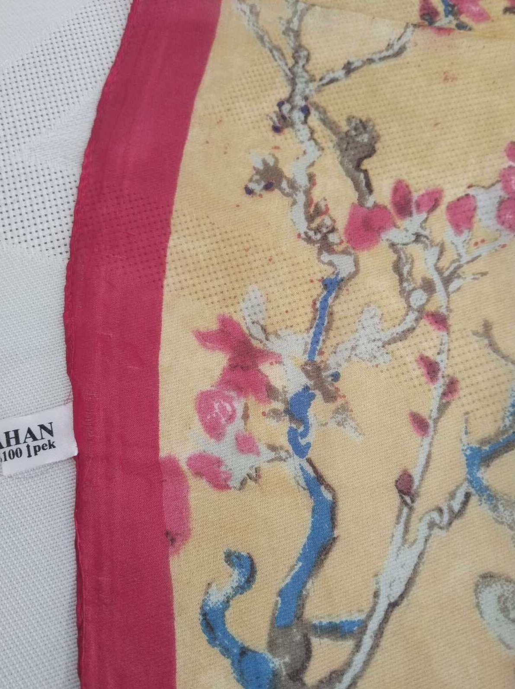

Kış seçkisi
Tümü (21)01

İpek şal · 70×180
Van Gogh Badem Ağacı İpek Şal 70×180
1.199 TL
02

İpek şal · 70×180
Klimt Çiçek Bahçesi İpek Şal 70×180
1.199 TLSon 1
03

İpek şal · 65×190
Van Gogh Zambaklar İpek Şal 65×190
1.199 TL
04

İpek eşarp · 95×95
Van Gogh Badem Çiçeği İpek Eşarp 95×95
1.099 TLYeni
“Eşarbın kenarına dokunun: makine dikişi değil, elde kıvrılmış bir rulo.”Atölye notu